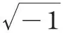
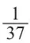

英文
英文阿瑟·爱丁顿
编者按
本文的内容是阿瑟·爱丁顿在数学协会上发表的一篇关于“宇宙的终点”的非正式讲话。他说，人们肯定首先要问“宇宙的终点是时间方向上的终点还是空间方向上的终点？”空间本身也许不存在终点：现代宇宙学认为宇宙类似于一个球体的表面，有限但无界。至于时间，热力学第二定律预言整个宇宙最终将达到一个以完全无序为标志的热平衡状态。然而，如果时间是无限的，那么宇宙粒子的每一次可能的涨落都会短暂地打破这种平衡。爱丁顿在结束语中预言了宇宙终结的实际方式：宇宙作为一个充满辐射的球不断地变大，每15亿年其大小约膨胀一倍。 英文
宇宙或者说时空是一个四维连续区，因此我们可以从很多不同的角度来讨论它的终点。毫无疑问“以数学物理的视角”来描述以下我试图展开讨论的内容绝非易事。所以我必须相当仔细地考虑这个最初的问题：宇宙的终点是时间方向上的终点还是空间方向上的终点？ 英文
球面空间
我们不再寻找宇宙在空间方向上的终点。因为我们有理由相信，宇宙的空间部分具有球面结构。如果朝着空间中的任何一个方向一直走下去，我们不会到达空间的终点，也不会走到无穷远处；但是，当我们走了一段距离（并不是无法想象的远）以后，我们发现自己又回到了原来的出发点，相当于“绕了宇宙一圈”。我们把具有这种特性的连续区说成是有限但无界。球的表面即为有限无界二维连续区的一个例子；我们生活的三维空间被认为具有同样的连通性，但是由于比二维空间多出了一个空间维度，这使得我们很难用图形把这样的三维连续体表示出来。如果我们试图画出一个三维球面空间的话，我们必须要记住，只是这个三维球面对应于我们的三维空间；而这个球面的里面和外面都是我们虚构出来的，因而并不与现实的宇宙相对应。 英文
最近，主要通过勒迈特教授的工作，我们已经获知，我们生活的这个三维球面空间正在快速地膨胀着。事实上，如果我们想环绕宇宙空间一周而回到出发点的话，我们的行进速度必须要比光速还快；这是因为我们在路上行进的同时，我们前面的路途也在变长。就好像参加了一场终点线向前移动得比运动员跑步速度还快的赛跑一样。想象一下恒星和星系都镶嵌在一个橡胶气球的表面，而这个气球正在持续不断地膨胀着；这样，如果不考虑恒星和星系各自的运动以及它们之间的万有引力，这些天体之间的距离将由于宇宙空间的膨胀而变得越来越大。由于旋涡星云彼此相距很远，以至于它们几乎不会受到相互作用的引力影响，因而它们的形状很可能就体现了宇宙膨胀的效果。几年前我们就已经知道它们正在迅速地相互分散远离，我们可以通过测量它们之间的退行速度来推算宇宙的膨胀速度。 英文
天文学数据表明宇宙空间最初的半径大约为12亿光年。要知道，远至几百万光年的天体实际上已经被我们观测到了，所以12亿光年也并非是不可想象的距离。在那种尺度下，宇宙中物质间相互作用的引力刚好可以把物质聚合在一起与宇宙空间的膨胀趋势相平衡。但是这种平衡并不稳定。于是宇宙开始膨胀，最初膨胀得比较慢；但随着物质之间的距离越来越远，它们之间的引力也越来越小，以至于越来越没有办法抑制宇宙的膨胀。我们不知道宇宙现在的半径，但我估计当今宇宙的半径应该至少是最初半径的10倍。 英文
现在，我们的计算结果依赖于旋涡星云间分离速度的天文观测数据。但是我相信，我们也能从理论上顺利地得出不依赖天文观测数据的相同计算结果。从旋涡星云的退行速度我们不但可以推算出宇宙最初的尺度，还可以估算出宇宙总的质量，进而得到宇宙中总的质子数。我得出的宇宙中的总质子数为7×1078或14×1078。†我相信这个数值与静电力和引力的比值有密切的关系，并且只与这个比值的平方相差一个常数因子。如果F是质子和电子之间的静电力与万有引力的比值，我们得到F2 = 5.3×1078。理论上我们有理由相信宇宙中的粒子总数是αF2，其中α是一个简单的几何因子（也许和π有关）。可能不久我们就能得到α的理论值，从而给出宇宙膨胀速度的观测值同静电力与引力的比值之间的完整关系。 英文
时间的指示牌
我不能继续讨论跟空间有关的问题，而必须开始讨论与时间有关的内容了。宇宙在空间上是闭合的，但是在时间尺度的两个方向上却都是开放的。从“这里”朝着空间中的任意方向出发，最后我们都会回到“这里”；但是从“现在”出发，无论是向着未来还是向着过去前进，我们将永远不可能再回到“现在”。在这里并没有弯曲的时间回路能把我们带回到原来出发的时刻。从数学上说这种差别是由记号

造成的，正如闭合椭圆和开放双曲线之间的区别也是由这个记号造成的一样。 英文
于是，如果我们要找寻宇宙的终点——其实并不是终点，而是一种永无休止的持续，那么我们就必须从时间的两个方向中选一个作为开始的方向。但是我们如何决定应该选取哪一个时间方向呢？这是个很重要的问题。想象一下你处在时空中的某个陌生的部分，在那里你不会受到常规标志或传统参考标准的影响。但是那里应该有一个时间的指示牌，一边写着“通向未来”，而另一边写着“通向过去”。我要做的第一件事情就是要先找出这个指示牌，否则一旦我弄错了方向，那么无疑，我还是会把你们带到“宇宙的终点”，不过这个“终点”更通常地是被描述为宇宙的起点。 英文
在日常生活中，我们的意识充当了时间的指示牌。或者更准确地说，我们的意识根本不关心所谓的时间指示牌；但是无论什么地方，在紧急情况下意识总是朝着某一个特定的方向行进思考，而物理学家也温和地接受了意识的引导并把它的行进方向标记为“通向未来”的方向。这里有一个重要的问题，意识在选择它的行进方向时是否也受到物理世界中的某种事物的影响？如果确实如此，那么我们应该能够直接找出究竟是物理世界中的什么因素使得有意识的人类认为时间是沿单向车道行进的。有观点认为“时间的流逝”只是一种主观的想法而不是物理世界中真实存在的现象。按照这个观点，物质世界中过去和未来的区别只不过相当于左和右之间的区别而已。事实上我们的经验显示时空就像一组电影胶片，它总是按照某种特定的方向放映，但这并不是由胶片（物理时空）本身的性质或特点所决定的，而是与胶片插入放映机的方式（意识）有关。这种观点认为，把事物储存到我们意识中的方式使我们认为时间具有单向性：
“大自然给我们配备了这样的意识思维方式
使得我们永远不能倒退”。 英文
如果以上的观点是对的，那么在我们关于物理世界的图像中就应该抛弃“时间的流逝”这种观点。就像我们放弃旧的时空观以及其他对周围事物观察得到的个人看法一样，我们必须抛弃事物是动态呈现的这种观念，因为这并不是世界本身的性质而只是我们人类在认识物理世界时引入的一种人类特有的理解方式。我们要特别注意的是，如果真是这样，那么我们就不能先入为主地认为“过去到未来”的呈现比“未来到过去”的呈现更正确或更重要。当然，我们也必须放弃进化论，或者至少要同时建立一种具有同样重要性的反进化论。 英文
如果有谁坚持时间的行进具有单向性这种观点，我没有任何办法说他是错的。我只能对他说：“你是一个致力于把一个真实均衡的世界观灌输给年青学生的老师。但是你所教授的（或没有阻止你的同事去教授的）是完全片面的进化论学说。你并没有告诉学生进化论只是单纯事实的罗列，而是让他们认为似乎从混乱无形到完美有序的过程才是重要的，才真正会是鼓舞人心的。你这样做其实是不诚实的；你应该把反进化论也放在同样重要的位置并讲述从未来到过去的演化过程。你应该向他们展示：现今自然界存在的丰富多彩的生命形态是如何反进化到越来越不适合生存，直到古生代最原始的形态的；自然界是如何从太阳系反进化成混沌的星云；以及，随着从未来到过去的时间进程，自然界是如何选择了一个充满问题的宇宙，而这些问题并不是宇宙本身的构造不好，总而言之，最初的宇宙是一团糨糊。” 英文
熵和无序度
撇开意识的引导性不谈，我们已经发现在物理世界里有可能找到一种时间的指示牌。这个指示牌具有非常奇特的性质，当然，我还不敢说这个指示牌的发现与当年在宇宙中发现客观的“时间流逝”有一样的重要性。但是不管怎样，这个指示牌可以用来区别过去和未来，而空间上的左和右却没有相应的客观区分。我们可以用某种称为熵的可测量量来标志这种时间方向上的差别。假设有一个孤立的系统，我们在两个不同的时刻t1和t2分别测量它的熵S。因为意识这个概念在数学物理领域里并不是可靠的证据，所以我们想在不靠意识直觉的情况下知道t1究竟比t2早还是晚。这里用到的规则是：熵越大，时间越晚。在数学形式中为：
dS/dt总是大于零。
这就是著名的热力学第二定律。 英文
熵是个很特殊的概念，与经典物理学常用的概念很不一样。我们可以把熵简单地描述为：熵是衡量系统无序性的物理量。于是，根据熵这个时间的指示牌，我们得到了这样的规律：从过去到未来，无序性是增加的。物理学发展的最奇妙的特点之一就是：多年来，与其他常规的分析方法一样，我们对于熵的认知一直都在悄悄地发展着。直到最近，熵在科学研究中仍只是“居于次要位置”。由熵可以很方便地得到实用的结果，但并不能由此表明人们对熵有了深刻的洞察力。不过现在熵正在谋求更大的发展，并且我认为，毫无疑问，它最终会超过它的对手。 英文
这里还需要强调几个重要的地方。首先，世界上没有其他独立的时间指示牌；所以如果我们不信任或者“通过辩解来消除”熵作为时间指示牌的这个性质，那么物理学关于过去和未来的差别也会随之消失。第二，检验熵的实验结果应该都是一致的；宇宙中任何地方的孤立系统都应该给出相同的时间方向。第三，在进行这类实验时，我们必须保证我们的系统是严格孤立的系统。进化论告诉我们，随着时间的推移，越来越高的有序系统产生了；但是这与整体上有序性的减少并不矛盾。这在一定程度上是有序性的定义问题；从进化的角度看，需要注意的是有序性的质而非量。但无论如何，有序性很高的系统是通过吸取其他与之接触的系统的有序性来实现的。一个人从过去到未来总是变得越来越有序，至少他自己愿意这么认为。但是如果我们使他成为一个孤立的系统，即切断他的饮食和空气供应，那么他很快就会达到一种大家都认同的“无序状态”。 英文
系统可能达到完全的无序状态，我们称之为热力学平衡态。此时，熵不能再继续增加了，而热力学第二定律又不允许它减少，于是熵就只能保持为一个常数。这时，我们的时间指示牌也消失了，因而对于这样的一个系统，时间变得固定不动了。但这并不表示时间不存在；时间仍然像空间一样存在并延续着，但是它已经不再具有任何单向性了。或者说，单行道仍然存在，但不再有汽车在上面行驶了。 英文
让我们回到时间指示牌的讨论上来。通过前面的讨论我们已经知道，无序性是不断增加的。虽然总的有序性正在减少，但是宇宙中的某些部分却展示出越来越高的特殊有序性；这就是进化现象。但是这些有序的系统最终会被不断增加的机遇与混沌所吞没，然后整个宇宙会达到一种完全无序的状态，即变成热力学平衡态下的一堆毫无特征的均匀物质。这就是宇宙的终点。时间仍然会永远地延续下去，可能没有尽头。但是时间的这种延续没有了明确的意义。很明显，在热力学平衡态即将到来之前，物理世界中已经不存在意识了，dS/dt也成为零，再也没有一种指示牌能告诉我们，哪个时间方向通向未来，而哪个又是通向过去的。 英文
时间的起点
如果我们朝着“时间流逝”相反的方向，即朝着过去的方向看，我们将会发现更加有趣的现象。当我们沿着“时间流逝”的方向往回走时，会发现宇宙的有序性越来越大。如果我们一直不停地走下去，就会到达一个物质和能量的有序度都为允许的最高限的时刻。这时，再想进一步走下去已经不可能了。我们已经来到了时空戛然而止的终点——只不过我们通常称之为“起点”。 英文
在这里的讨论中我没有“涉足哲学”的意思。我并不认同哲学中那些与现在自然界秩序的起点有关的概念。我只是想说明物理规律中现有的基本概念使我们陷入了困境。我没有办法解决这个矛盾；也不能预料未来科学的发展能否避开这个矛盾。这个矛盾是这样的：考虑我们周围的物质，我们发现它们远不是“原子的偶然集合”。现有的物理理论所描述的物理世界图像表明，这些单个元素的分布情况是偶然出现的概率仅仅是10的10次方的10次方分之一。有人喜欢把这种现象称之为宇宙意图或设计的非随机特性；但是，我要把它称为不受约束的反概率性。在物理学领域内，我们不愿意承认反概率性在我们所研究的包含数以十亿的原子和量子系统的相互作用中发挥了作用；而且实际上我们所有的实验结果也证实了所有这些现象都是由随机定律决定的。于是，我们就可以把反概率性从物理定律（微分方程）中剔除了。因为它总要出现在物理框架中的某个地方，所以它会很自然地在方程的边界条件里再次现身。通过把它置于我们现有的物理问题的范围之外，我们幻想着我们已经摆脱了这个困难。只有当我们中的某些人被误导着试图穿越几十亿年的时间回到过去时，我们才会发现被我们剔除的所有反概率性现象都堆在那里像一堵高墙一样形成了一个不可逾越的边界，这即是时间的起点。 英文
目前已经有人提出了一种可以解决以上矛盾的方法，这个方法似乎还得到了一些科学工作者的支持。然而，我不同意那种解释，因为我觉得它是站不住脚的，并不是因为我想让这个矛盾继续存在下去。我更愿意去找一个确切的着眼点，但是我确信现在鼓吹的着眼点其实是个死胡同。我必须首先回应对我的一些小的批评意见。 英文
有时，我会因为没有在我所讨论的内容中充分强调熵是概率性而非确定性的物理量而受到批评。如前所述，如果我们在不同的时刻观察同一个系统，那么熵较大的时刻将是较晚的时刻。严格来讲，我应该如此表述：对于一个较小的系统，上述结论正确的可能性为1020 : 1。虽然我清楚地知道这个结论出错的概率是1/1020，但是，由于我在陈述上述结论时不够严谨，有些批评者仍会为此感到震惊。坦白地说：在过去的25年里，我撰写了很多文章和书籍，对物理现象做了大量的解释，恐怕我所做的各种解释中没有多少结论的出错概率会小于1/1020。在纯数学领域之外，我的结论的正误比估计更接近10 : 1，而不是1020 : 1；尽管如此，还是自负不已。我认为出错率为1/1020的结论对我们认识世界并不会有什么坏处；而我们应该稍微搁置关于出错概率的讨论。如果按照反对者的说法，这个世界上唯一能发表言论的就只可能是纯粹的数学家了。 英文
涨落
我前面所说的着眼点依赖于概率的涨落。我们考虑一群随机运动的粒子，随着时间的推移它们会经历任何可能的状态，所以只要我们等待足够长的时间，即使是最有秩序的、概率上最不可能的状态也会偶然出现。当宇宙达到完全的无序状态（热力学平衡态）后，时间仍然会无限地存在，宇宙中的元素将有机会反复经历各种可能的状态。如果我们观察足够长的时间，我们会发现，系统中一些原子所处的状态结构可能会偶然地与我们现在这个空间中的原子一样；同样偶然地，原子所组成的系统中的某一个系统出现的声波将可能与我口中现在发出的声波一样；而不管你是处于清醒还是昏昏欲睡的状态，这些声波都将去冲击由其他原子所组成的偶然与你的耳朵类似的系统。这个模拟的数学协会报告会将会在时间t达到无穷大之前重复很多次，实际上是无穷多次。别问我是否期望你们相信这些真的会发生。‡ 英文
“逻辑就是逻辑，这就是我所说的全部。” 英文
因此，当宇宙到达热力学平衡时，熵就会稳定地处在它的最大值上，除非出现一个千载难逢的极小的概率，使得熵从最大值回落到明显比最大值小的值。这个涨落消失之后，要等很长时间才会碰巧发生下一次涨落。尽管也许要等10的10次方的10次方年的时间，但是不用担心，我们拥有无限延续的时间。这种涨落的大小并没有什么限制，如果我们等待足够久，也许我们可以碰上一次大的涨落，使宇宙远离热力学平衡态，变成和我们现在这个宇宙一样的状态。如果我们等候更长的时间，其间会有数不清的类似的大涨落发生，也许还会有一次较大的涨落使宇宙远离热力学平衡态，变回到一秒钟以前的状态。 英文
有人提出，我们现在正处在某个涨落的下坡过程中。这种提法存在令人兴奋的微妙之处。我们的宇宙刚好处在涨落的下坡过程而非往上的爬坡过程，这是一种巧合吗？完全不是。就物理世界而言，我们已经定义了时间的方向为有序度减少的方向，因此，无论我们站在山坡的哪一边，我们的指示牌都是指向下坡的。事实上，在这个理论里，总的来说时间的流逝并不是时间本身的性质，而是我们所处的那个涨落的山坡的性质。尽管这个理论假设宇宙包含了一个极不可能发生的概率事件，但同时该理论却提供了无限长的时间使得最不可能发生的概率事件最终总能发生。无论怎样，我个人觉得以上的说法是不合理的。 英文
如果我们把一壶水放到火上，这壶水有可能结冰吗？如果一个人把一壶水放到火上无限长的时间，某一天这个人可能会惊讶地发现，他壶里的水居然结冰了。但这类事情不可能发生在我身上。即使将来有一天这种事情真的在我眼前发生了，我也不会用上面那样的方式去解释它。我宁愿相信这是一个魔鬼干的，而不是小概率事件发生了；而这样做的时候，我总该更像是一个理性的科学家吧。我现在之所以不相信魔鬼会干预我的烹调事务或者其他事情，是因为日常经验使我相信自然界会遵循一定的统一性，即物理定律。我相信这些定律是因为它们已经被反复验证过。当然，也有可能所有这些用来验证物理定律的实验一开始就恰好满足这些定律只是一种巧合。这或许是个难以置信的巧合，但是我相信这种巧合不会像我壶里的水发生结冰的巧合那样难以置信。一旦这种事件发生了，而我又找不到其他合适的解释，那么我只能在以下两种极为难以置信的巧合之间做出选择：（a）这个世界上并不存在物理定律，迄今为止观察到的一致性仅仅是巧合。（b）这个事件是符合物理定律的，只不过难以置信的巧合事件发生了。我更愿意接受前一种解释，因为数学计算的结果表明它的可能性更高一点。相比于违反物理定律而言，我把难以置信的巧合事件的发生看成是更加糟糕的事情；因为我之所以接受存在于自然界中的物理定律只是因为我相信难以置信的巧合事件不会发生——至少在我有生之年不会发生。§ 英文
同样，如果逻辑上预言在t =∞之前仅仅是由于原子的随机排列而出现了一个模拟的数学协会的报告会，那我要说的是，我不能接受这就是今天t = 1931年的这个数学协会报告会发生的理由。我们必须小心这一点，因为这里有个不小心就容易陷入的圈套。在t = –∞到t = +∞之间，1931年并不是一个完全随机的时间。我们不能因为在t = –∞到t = +∞之间只是在第1/x个时间里有一个与今天的数学报告会一样的涨落发生了，就说在1931年里发生这种涨落的概率是1/x。从我们现在的讨论情况来看，1931年的重要性就在于在这段时间里宇宙中出现了能够思考宇宙以及它的涨落的人类。现在我认为有一点是很清楚的，就是人类不可能在处于热力学平衡态下的宇宙中生存。要让生物能够生存下去，宇宙就必须在很大程度上偏离平衡态。因此，对于涨落论的支持者来说，不对在10的10次方的10次方年这段时间中发生涨落的概率比数学物理学家成长和存在的最小概率还小的情况进行说明是完全合理的。这就大大缩小了x的值，但是问题仍然存在。最初的假设应该是这样的（除非我们承认某些状态在宇宙的结构中不可能发生）：几乎可以肯定地说宇宙在给定的任一时间都将近似处于最无序的状态。改进后的说法是（除非我们承认某些状态在宇宙的结构中不可能发生）：几乎可以肯定地说有数学物理学家存在的宇宙在给定的任一时间都将处于最无序的状态，而这个状态也适合人类的生存。我想，我们已经很清楚地看出以上两种说法都是站不住脚的。于是我们被迫接受反概率论；而对待它的最好办法显然是，正如之前所说过的，把所有反概率性现象整理在一起并堆积在时间的起点上。 英文
熵这个指示牌和被称作“流逝”或“发展”的时间动态特征之间的关系导致了一些非常困难的问题，在这里我不可能做详细的讨论。其中的困难之处在于熵这个指示牌似乎和我们预期的时间标记非常不同。我需要强调的是，除了意识以外，熵的增加是我们发现时间具有单向性的唯一线索。曾经有人向我提出一个粗鄙的问题：一个电子（它没有意识）是如何记住时间的流向的？为什么它不会无意中改变方向，即，朝向时间的另一个方向？它需要事先计算好朝哪个方向熵会增加，然后再决定往哪个方向前进吗？我倾向于认为电子确实会作这样的判断。对一个电荷来说，朝相反的时间方向意味着它的电荷符号要发生变化。所以，如果一个电子错误地选择了时间方向，那么它就会变成一个正电荷。这跟狄拉克博士在以电子波动方程为基础进行数学计算时碰到的一个麻烦是一样的，在他的计算里电子真的会走错方向。就像狄拉克所发现的，在一次碰撞之后，电子有一定的概率可以改变电荷的符号。你必须要明白的是，这仅仅是数学的计算结果，并未在现实生活中发现。之所以是这样，我认为似乎有很合理的理由可以解释。假设我们考虑一个最多涉及四个电荷的数学问题，这个问题是任何一个计算器都能够处理的。于是，其中一个倒霉的电子不得不通过观察其他三个电荷的有序性来判断时间从过去到将来的流向。很自然，当我们只考虑三个电子的情况时，很容易发生偶然的巧合使得电子弄错方向；所以电子有很好的机会可以因为弄错了时间的方向而变成一个正电荷。但是在现实实验中，我们所用的仪器会包含几十亿个粒子——多到足够让电子准确地确定出时间的方向。狄拉克理论预言的情况从来就没有发生过，因为与之相适的问题从来没有出现在现实世界中。如果将狄拉克理论应用于只有四个电子的宇宙中，那么经过分析很可能会给出这样的结论：在这个系统中不会存在一个稳定的单向的时间方向，奇特的事情会不断地发生，而这些在我们这个包含了约1079个粒子的真实宇宙中是完全不可能发生的。 英文
海森堡原理
如果我们不考虑不确定性原理的话，那么我们对时间的讨论将是不完整的。这个原理是海森堡在1927年用公式表达出来并已得到一致认可的。人们已经意识到理论物理学正慢慢地偏离确定性这个基础；海森堡不确定性原理对人们的思维产生了巨大的冲击，因为这个原理作为物理世界的基本定律实际上认为未来理应具有一定程度上的不确定性或不可预测性。相比于经典物理学，这种观念上的转变使得时间的进展具有了更加真实的意义。每一个瞬间过后，世界都可能增添一些新事物——这些事物不可能单纯使用数学方法从过去已经发生的事件中推测出来。 英文
确定性的观点占主导地位至少有两个世纪了，确定论认为如果我们知道了某个时刻宇宙状态的完整数据，比如说1600年第一分钟的完整数据，那么单纯的数学推算就可以告诉我们这个世界以前是什么样子以及未来将会是什么样子。未来是由现在所决定的，因为一个微分方程的解由边界条件决定。要理解这个全新的观点，我们必须意识到我们一开始提出的“完整数据”这个概念是存在回避问题实质的风险的。而我们对物理世界的所有认识都是推论性的。我的钢笔并不是作为一个在物理世界中存在的物体使我直接认识到的；我是通过从笔上反射进我眼睛里的光以及握笔时在我肌肉中传播的压力波等感知它的存在和性质的。 英文
我们对过去事物的感知也遵循着完全一样的模式。就像现在我可以通过我的视觉感受去推断一个客观的物体，即我的钢笔一样，我也可以从患上麻疹这个情况推断出几天前应该受到了感染。如果我们完全依照这个规律，就可以就1930年已经发生的全部事件去推断在1600年使它们发生的原因。乍一看似乎这些推断出来的原因与钢笔（也是一种推断出来的原因）的存在状态一样对我们认识物理世界具有同样重要的作用。于是确定论者们认为这令我陷入了进退两难的境地。如果某个科学工作者在1600年的世界中四处探寻并且恰好找到了这些事情的起因，那么他就有完整的数据来准确地预测1930年发生的事情；如果他做不到，那么他肯定没有完全认识1600年的宇宙，因为这些起因跟我们在其他推论过程中得出的起因一样都是些物理实体。 英文
我还需要继续说明他们是如何为了回避问题的实质而武断地规定哪些内容应该被视为是1600年的世界的完整数据，而不考虑那时是否存在可以想象的方式去获取这些数据。海森堡发现（至少在包括整个原子物理学和电子理论的广泛物理现象中），按照自然界的规律，在我们支持确定论的朋友们所需的数据中，只有一半有可能被1600年的研究者通过不懈的努力收集到，而对这一半数据的完整认识将使我们自动失去了得到另一半数据的机会。这是个很奇怪的约定，因为你可以选择要了解哪一半数据；你可以知道任何一半的数据，但就是不能同时知道全部的数据。或者你也可以做出妥协而选择不完全地知道这两个一半的全部数据，即有不确定的部分。这个物理规律是确定的：数据是成对出现的，你对一对数据中的一个测量得越精确，则对另一个的测量结果就会越不精确。 英文
当然，想要预测未来，全部数据的两个部分都是必要的，但是如果我们谨慎地选择预测的对象，我们还是可以做出一些可靠的预言的。例如，不确定性原理不会对我预测未来一年蒙特卡洛轮盘赌上的数字零出现的次数造成影响，这个次数大概是小球总的旋转次数的

。实践证明，所有物理学和天文学上的成功预测都是通过这种取平均的办法来消除未来的内在不确定性的。 英文
作为一个例证，让我们来考虑一个最简单的预测。假设我们有一个粒子，例如电子，没有受到任何扰动而做匀速直线运动。如果我们知道它现在的位置和速度，那么预测它未来某个时刻的位置是一件很简单的事情。海森堡不确定性原理告诉我们，位置和速度是结成对的数据；也就是说，我们可以无限精确地知道它的位置，也可以无限精确地知道它的速度，但是我们就是不能同时精确地知道这两个量。所以我们在试图准确预测这个粒子未来某个时刻对应的位置时遇到了困难。如果我们愿意的话，我们可以观察这个粒子现在时刻和未来时刻的精确位置（因为它们不是结成对的数据），然后计算出这段时间的平均速度。假如当我们由这个平均速度和最初时刻的位置来计算未来时刻的位置时，我们发现结果完全正确，于是我们成了真正的预言家——其实只是事后诸葛亮。 英文
这个不确定性原理已经完全融入了现代物理学，在波动力学中的确可以认为在电子的位置和速度之间就表现出了那种“相干关系”。由于这种相干关系，同时精确地知道电子的位置和速度是与以上的物理图像相矛盾的。因此，按照我们现在的观点，缺少预测未来所需数据中的一半算不上是信息不灵通；数据不完整是因为在我们做出预测之前它们并不存在。它们是在我们的测量行为发生之时才出现的。 英文
我认为为了充分说明我的主题，我应当用一个预言来作为对宇宙终点可能会是什么样子这个问题的总结。我承认我并不十分情愿回答这个问题。我甚至想，既然我刚才已经解释了未来是不可预测的，我就可以以此为借口拒绝回答这个问题。但恐怕有人会说，你这个借口太勉强，你所需要做的只是计算一下平均值，而那种类型的预言并不违背不确定性原理。过去我们认为宇宙中的所有物质最终会聚集到一起变成一个温度均匀、密度极大的圆球；但是球面空间的学说，尤其是由此得到的宇宙膨胀的最新结论改变了以前的看法。现在还存在一两个未得到解决的问题，这使得我不能得出明确的结论，所以我在这里只是给出其中的一种可能性。大家普遍认为物质会慢慢地转变成辐射。如果是那样的话，整个宇宙就会变成一个不断膨胀的充满辐射的球，辐射会变得越来越弱，相应的波长也变得越来越长。大概每过15亿年，宇宙的半径就会增加一倍，宇宙的大小将会以这种几何级数的增长方式永远地膨胀下去。 英文
（沈乃澂 翻译；张元仲 审稿）
* 这篇文章来自爱丁顿于1月5日在数学协会上发表的讲话。
† 这个结果的不确定性与在有限无界的空间中计算粒子数有不可分割的联系。因为我们无法分辨这些质子到底被计算过一次还是两次。
‡ 我希望“宇宙膨胀”说会阻止它的发生。
§ 毫无疑问，“极不可能”发生的巧合会在我们面前发生，只是这种巧合事件的发生概率与我们在此讨论的巧合事件有完全不同的数量级。